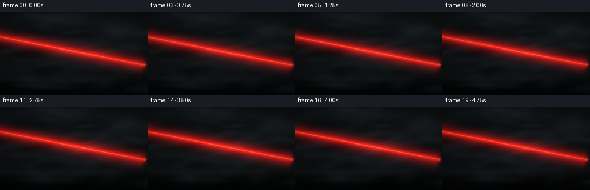
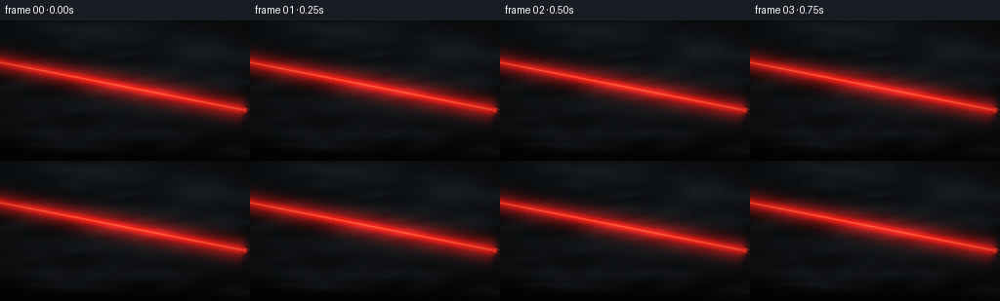
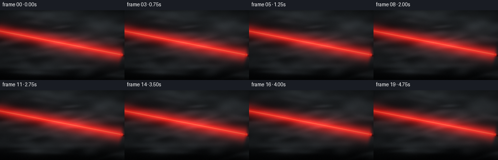
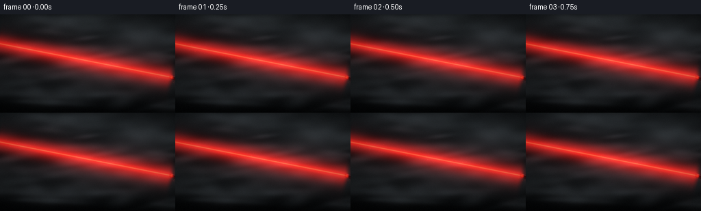
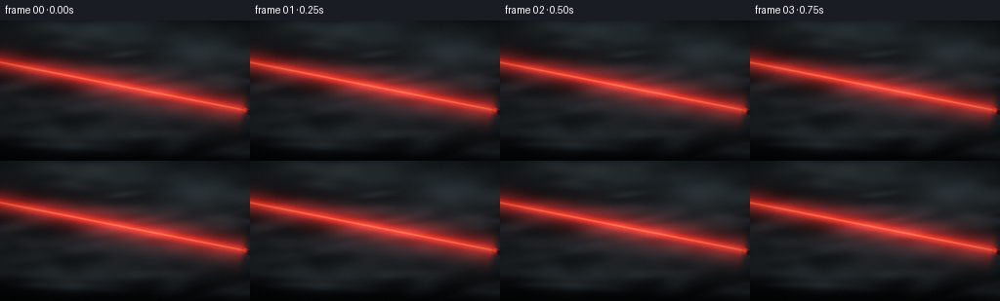
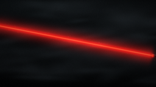
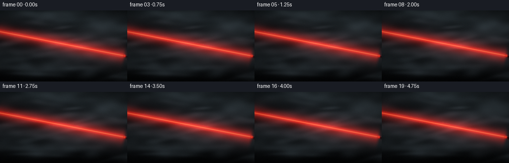
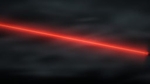

CODING AGENTS AS PIXEL WORLD MODELS
traex/DeepSeek-V4.1-Flash · phygen_053
点击播放 · 原生 RGB 像素
逐轮保存的候选
回放视频、检查图与代码变化。
每份候选均可单独播放。实际图片检查记录在下方工具轨迹中。
候选 01播放与检查图
点击播放 · 原生 RGB 像素


展开代码变化
--- 上一保存版本
+++ 本次保存版本
@@ -0,0 +1,334 @@
+#!/usr/bin/env python3
+"""Render a laser beam cutting through drifting smoke."""
+
+from pathlib import Path
+
+import numpy as np
+from PIL import Image
+from scipy.ndimage import gaussian_filter
+
+import artifact_io
+
+
+CASE_DIR = Path(__file__).resolve().parent
+WIDTH = 256
+HEIGHT = 144
+FPS = 4.0
+FRAME_COUNT = 20
+SCALE = 2
+RW = WIDTH * SCALE
+RH = HEIGHT * SCALE
+
+
+def smoothstep(edge0, edge1, value):
+ t = np.clip((value - edge0) / (edge1 - edge0), 0.0, 1.0)
+ return t * t * (3.0 - 2.0 * t)
+
+
+def make_puffs():
+ rng = np.random.default_rng(5317)
+ puffs = []
+ for index in range(92):
+ if index < 58:
+ # Long, thin wisps carry most of the smoke's motion.
+ rx = rng.uniform(22.0, 82.0)
+ ry = rng.uniform(3.5, 13.0)
+ amplitude = rng.uniform(0.34, 0.88)
+ else:
+ # Broader veils give the wisps a common atmospheric body.
+ rx = rng.uniform(42.0, 112.0)
+ ry = rng.uniform(14.0, 34.0)
+ amplitude = rng.uniform(0.10, 0.30)
+ puffs.append(
+ {
+ "cx": rng.uniform(-55.0, RW + 50.0),
+ "cy": rng.uniform(10.0, RH - 8.0),
+ "rx": rx,
+ "ry": ry,
+ "angle": rng.uniform(-0.28, 0.18),
+ "amp": amplitude,
+ "vx": rng.uniform(3.0, 11.0),
+ "vy": rng.uniform(-3.2, 1.1),
+ "turn": rng.uniform(-0.035, 0.035),
+ "phase": rng.uniform(0.0, 2.0 * np.pi),
+ }
+ )
+ return puffs
+
+
+def make_texture_waves():
+ rng = np.random.default_rng(91021)
+ waves = []
+ for frequency, amplitude in (
+ (1.2, 0.34),
+ (2.1, 0.24),
+ (3.7, 0.18),
+ (5.3, 0.13),
+ (8.1, 0.08),
+ (11.7, 0.05),
+ ):
+ waves.append(
+ (
+ rng.uniform(-frequency, frequency),
+ rng.uniform(-frequency, frequency),
+ rng.uniform(-0.55, 0.55),
+ rng.uniform(0.0, 2.0 * np.pi),
+ amplitude,
+ )
+ )
+ return waves
+
+
+def make_dust():
+ rng = np.random.default_rng(7713)
+ particles = []
+ for _ in range(165):
+ particles.append(
+ {
+ "u": rng.uniform(-0.06, 1.04),
+ "offset": rng.normal(0.0, 10.5),
+ "speed": rng.uniform(0.004, 0.018),
+ "wobble": rng.uniform(1.2, 5.5),
+ "phase": rng.uniform(0.0, 2.0 * np.pi),
+ "strength": rng.uniform(0.12, 0.72),
+ }
+ )
+ return particles
+
+
+PUFFS = make_puffs()
+WAVES = make_texture_waves()
+DUST = make_dust()
+
+
+def beam_geometry(t, camera_x, camera_y):
+ sway_x = 0.75 * np.sin(0.85 * t + 0.2) + 0.24 * np.sin(2.15 * t + 1.1)
+ sway_y = 0.52 * np.sin(1.12 * t + 0.8) + 0.18 * np.sin(2.7 * t + 0.1)
+ tip = np.array([500.0 + camera_x + sway_x, 183.0 + camera_y + sway_y])
+ far = np.array([-11.0 + camera_x + 0.25 * sway_x, 83.0 + camera_y + 0.25 * sway_y])
+ return tip, far
+
+
+def distance_to_segment(xx, yy, start, end):
+ vx = end[0] - start[0]
+ vy = end[1] - start[1]
+ denominator = vx * vx + vy * vy
+ u = ((xx - start[0]) * vx + (yy - start[1]) * vy) / denominator
+ clipped = np.clip(u, 0.0, 1.0)
+ px = start[0] + clipped * vx
+ py = start[1] + clipped * vy
+ distance = np.hypot(xx - px, yy - py)
+ return distance, u
+
+
+def render_smoke(xx, yy, t, camera_x, camera_y):
+ density_sum = np.zeros((RH, RW), dtype=np.float32)
+ for puff in PUFFS:
+ cx = (
+ puff["cx"]
+ + puff["vx"] * t
+ + camera_x
+ + 4.5 * np.sin(0.48 * t + puff["phase"])
+ )
+ cy = (
+ puff["cy"]
+ + puff["vy"] * t
+ + camera_y
+ + 3.0 * np.cos(0.42 * t + puff["phase"] * 0.71)
+ )
+ angle = puff["angle"] + puff["turn"] * t
+ cosine = np.cos(angle)
+ sine = np.sin(angle)
+ dx = xx - cx
+ dy = yy - cy
+ local_x = cosine * dx + sine * dy
+ local_y = -sine * dx + cosine * dy
+ puff_value = np.exp(
+ -0.5 * ((local_x / puff["rx"]) ** 2 + (local_y / puff["ry"]) ** 2)
+ )
+ density_sum += puff["amp"] * puff_value
+
+ texture = np.zeros((RH, RW), dtype=np.float32)
+ for kx, ky, omega, phase, amplitude in WAVES:
+ texture += amplitude * np.sin(
+ 2.0 * np.pi * (kx * xx / RW + ky * yy / RH) + omega * t + phase
+ )
+ texture = np.clip(0.5 + 0.5 * texture, 0.0, 1.0)
+
+ density = 1.0 - np.exp(-0.88 * density_sum)
+ density *= 0.56 + 0.54 * texture
+ density = gaussian_filter(density, sigma=1.15)
+ return np.clip(density, 0.0, 1.0), texture
+
+
+def add_dust(image, tip, far, t, density):
+ vx = far[0] - tip[0]
+ vy = far[1] - tip[1]
+ length = np.hypot(vx, vy)
+ nx = -vy / length
+ ny = vx / length
+ for particle in DUST:
+ u = (particle["u"] + particle["speed"] * t) % 1.18 - 0.09
+ offset = (
+ particle["offset"]
+ + 3.2 * np.sin(particle["wobble"] * t + particle["phase"])
+ )
+ px = tip[0] + u * vx + offset * nx
+ py = tip[1] + u * vy + offset * ny
+ ix = int(round(px))
+ iy = int(round(py))
+ if ix < 3 or ix >= RW - 3 or iy < 3 or iy >= RH - 3:
+ continue
+ proximity = np.exp(-0.5 * (offset / 8.5) ** 2)
+ twinkle = 0.58 + 0.42 * np.sin(2.3 * t + particle["phase"]) ** 2
+ strength = particle["strength"] * proximity * twinkle
+ if strength < 0.025:
+ continue
+ local_density = density[iy, ix]
+ strength *= 0.48 + 0.78 * local_density
+ patch = np.exp(
+ -0.5
+ * (
+ (np.arange(-3, 4)[None, :] - (px - ix)) ** 2
+ + (np.arange(-3, 4)[:, None] - (py - iy)) ** 2
+ )
+ / 0.72**2
+ )
+ image[iy - 3 : iy + 4, ix - 3 : ix + 4, 0] += strength * patch
+ image[iy - 3 : iy + 4, ix - 3 : ix + 4, 1] += strength * 0.07 * patch
+ image[iy - 3 : iy + 4, ix - 3 : ix + 4, 2] += strength * 0.025 * patch
+
+
+def composite_pointer(image, tip, camera_x, camera_y, t):
+ tail = np.array([tip[0] + 53.0, tip[1] + 16.0])
+ xx = np.arange(RW, dtype=np.float32)[None, :]
+ yy = np.arange(RH, dtype=np.float32)[:, None]
+ body_distance, body_u = distance_to_segment(xx, yy, tip, tail)
+ body_mask = 1.0 - smoothstep(5.4, 7.2, body_distance)
+
+ vx = tail[0] - tip[0]
+ vy = tail[1] - tip[1]
+ length = np.hypot(vx, vy)
+ cross = (-vy * (xx - tip[0]) + vx * (yy - tip[1])) / length
+ upper_highlight = np.exp(-0.5 * ((cross + 4.1) / 1.15) ** 2)
+ lower_highlight = np.exp(-0.5 * ((cross - 3.9) / 1.35) ** 2)
+ tip_rim = np.exp(-0.5 * ((body_u - 0.055) / 0.045) ** 2)
+
+ body_color = np.empty((RH, RW, 3), dtype=np.float32)
+ body_color[..., 0] = 0.014 + 0.085 * upper_highlight + 0.020 * lower_highlight
+ body_color[..., 1] = 0.018 + 0.092 * upper_highlight + 0.023 * lower_highlight
+ body_color[..., 2] = 0.023 + 0.100 * upper_highlight + 0.028 * lower_highlight
+ body_color[..., 0] += 0.14 * tip_rim
+ body_color[..., 1] += 0.016 * tip_rim
+ body_color[..., 2] += 0.009 * tip_rim
+
+ mask = body_mask[..., None]
+ image *= 1.0 - mask
+ image += body_color * mask
+
+ tip_distance = np.hypot(xx - tip[0], yy - tip[1])
+ lens = np.exp(-0.5 * (tip_distance / 2.1) ** 2)
+ lens_ring = np.exp(-0.5 * ((tip_distance - 4.2) / 0.85) ** 2)
+ image[..., 0] += 2.1 * lens + 0.28 * lens_ring
+ image[..., 1] += 0.10 * lens + 0.016 * lens_ring
+ image[..., 2] += 0.045 * lens + 0.008 * lens_ring
+
+
+def render_frame(frame_index):
+ t = frame_index / FPS
+ camera_x = 0.42 * np.sin(0.55 * t + 0.3) + 0.18 * np.sin(1.7 * t + 1.2)
+ camera_y = 0.30 * np.sin(0.72 * t + 1.1) + 0.12 * np.sin(2.1 * t + 0.4)
+
+ xx = np.arange(RW, dtype=np.float32)[None, :]
+ yy = np.arange(RH, dtype=np.float32)[:, None]
+ x = xx / (RW - 1)
+ y = yy / (RH - 1)
+
+ density, texture = render_smoke(xx, yy, t, camera_x, camera_y)
+ tip, far = beam_geometry(t, camera_x, camera_y)
+ distance, beam_u = distance_to_segment(xx, yy, tip, far)
+ beam_along = smoothstep(-0.015, 0.022, beam_u) * (
+ 1.0 - smoothstep(0.982, 1.012, beam_u)
+ )
+
+ background = np.empty((RH, RW, 3), dtype=np.float32)
+ top = np.array([0.009, 0.0125, 0.0145], dtype=np.float32)
+ bottom = np.array([0.0035, 0.0048, 0.0060], dtype=np.float32)
+ for channel in range(3):
+ background[..., channel] = top[channel] * (1.0 - y) + bottom[channel] * y
+ background += (
+ np.array([0.0050, 0.0085, 0.0100], dtype=np.float32)
+ * np.exp(-((x - 0.14) ** 2 / 0.17 + (y - 0.04) ** 2 / 0.15))[..., None]
+ )
+
+ smoke_tint = np.array([0.044, 0.051, 0.057], dtype=np.float32)
+ cool_fill = np.array([0.013, 0.020, 0.024], dtype=np.float32)
+ smoke = density[..., None] * (
+ smoke_tint + cool_fill * (0.35 + 0.65 * texture[..., None])
+ )
+ image = background + smoke
+
+ composite_pointer(image, tip, camera_x, camera_y, t)
+
+ core = np.exp(-0.5 * (distance / 1.05) ** 2) * beam_along
+ near_glow = np.exp(-0.5 * (distance / 4.7) ** 2) * beam_along
+ wide_glow = np.exp(-0.5 * (distance / 16.0) ** 2) * beam_along
+ pulse = (
+ 0.96
+ + 0.035 * np.sin(2.0 * np.pi * 1.25 * t)
+ + 0.018 * np.sin(2.0 * np.pi * 2.9 * t + 0.7)
+ )
+ beam_core = core * pulse
+ beam_mid = near_glow * pulse
+ beam_wide = wide_glow * pulse
+
+ image[..., 0] += 3.35 * beam_core + 0.90 * beam_mid + 0.19 * beam_wide
+ image[..., 1] += 0.20 * beam_core + 0.022 * beam_mid + 0.006 * beam_wide
+ image[..., 2] += 0.085 * beam_core + 0.009 * beam_mid + 0.003 * beam_wide
+
+ scatter_weight = density**0.82 * pulse
+ image[..., 0] += scatter_weight * (
+ 0.26 * beam_core + 0.66 * beam_mid + 0.30 * beam_wide
+ )
+ image[..., 1] += scatter_weight * (
+ 0.012 * beam_core + 0.020 * beam_mid + 0.008 * beam_wide
+ )
+ image[..., 2] += scatter_weight * (
+ 0.005 * beam_core + 0.008 * beam_mid + 0.003 * beam_wide
+ )
+
+ add_dust(image, tip, far, t, density)
+
+ emission = np.maximum(image - 0.018, 0.0)
+ bloom = gaussian_filter(emission, sigma=(9.0, 9.0, 0.0))
+ image += bloom * np.array([0.24, 0.13, 0.10], dtype=np.float32)
+
+ # Gentle highlight roll-off keeps the hot beam red instead of clipping to a flat stripe.
+ image = 1.0 - np.exp(-1.35 * np.maximum(image, 0.0))
+ image = np.power(np.clip(image, 0.0, 1.0), 1.0 / 1.08)
+
+ vignette = (1.0 - 0.34 * ((x - 0.5) ** 2 * 1.45 + (y - 0.5) ** 2 * 1.7))[..., None]
+ image *= np.clip(vignette, 0.62, 1.0)
+
+ rng = np.random.default_rng(8000 + frame_index)
+ grain = rng.normal(0.0, 0.0045, size=(RH, RW, 1)).astype(np.float32)
+ image = np.clip(image + grain, 0.0, 1.0)
+ return np.round(image * 255.0).astype(np.uint8)
+
+
+def main():
+ frames = []
+ for frame_index in range(FRAME_COUNT):
+ high_res = render_frame(frame_index)
+ frame = np.asarray(
+ Image.fromarray(high_res).resize(
+ (WIDTH, HEIGHT), Image.Resampling.LANCZOS
+ )
+ )
+ frames.append(frame)
+ print(f"rendered {frame_index + 1:02d}/{FRAME_COUNT}", flush=True)
+ artifact_io.save(np.stack(frames), CASE_DIR)
+
+
+if __name__ == "__main__":
+ main()
候选 02播放与检查图
点击播放 · 原生 RGB 像素


展开代码变化
--- 上一保存版本
+++ 本次保存版本
@@ -155,8 +155,8 @@
)
texture = np.clip(0.5 + 0.5 * texture, 0.0, 1.0)
- density = 1.0 - np.exp(-0.88 * density_sum)
- density *= 0.56 + 0.54 * texture
+ density = 1.0 - np.exp(-1.08 * density_sum)
+ density *= 0.58 + 0.54 * texture
density = gaussian_filter(density, sigma=1.15)
return np.clip(density, 0.0, 1.0), texture
@@ -261,8 +261,8 @@
* np.exp(-((x - 0.14) ** 2 / 0.17 + (y - 0.04) ** 2 / 0.15))[..., None]
)
- smoke_tint = np.array([0.044, 0.051, 0.057], dtype=np.float32)
- cool_fill = np.array([0.013, 0.020, 0.024], dtype=np.float32)
+ smoke_tint = np.array([0.085, 0.096, 0.103], dtype=np.float32)
+ cool_fill = np.array([0.025, 0.035, 0.041], dtype=np.float32)
smoke = density[..., None] * (
smoke_tint + cool_fill * (0.35 + 0.65 * texture[..., None])
)
@@ -281,14 +281,16 @@
beam_core = core * pulse
beam_mid = near_glow * pulse
beam_wide = wide_glow * pulse
-
- image[..., 0] += 3.35 * beam_core + 0.90 * beam_mid + 0.19 * beam_wide
- image[..., 1] += 0.20 * beam_core + 0.022 * beam_mid + 0.006 * beam_wide
- image[..., 2] += 0.085 * beam_core + 0.009 * beam_mid + 0.003 * beam_wide
+ ambient_haze = np.exp(-0.5 * (distance / 34.0) ** 2) * beam_along
+ beam_wide = beam_wide + 0.24 * ambient_haze * density
+
+ image[..., 0] += 3.25 * beam_core + 1.18 * beam_mid + 0.33 * beam_wide
+ image[..., 1] += 0.19 * beam_core + 0.034 * beam_mid + 0.011 * beam_wide
+ image[..., 2] += 0.082 * beam_core + 0.013 * beam_mid + 0.005 * beam_wide
scatter_weight = density**0.82 * pulse
image[..., 0] += scatter_weight * (
- 0.26 * beam_core + 0.66 * beam_mid + 0.30 * beam_wide
+ 0.24 * beam_core + 0.86 * beam_mid + 0.43 * beam_wide
)
image[..., 1] += scatter_weight * (
0.012 * beam_core + 0.020 * beam_mid + 0.008 * beam_wide
候选 03播放与检查图
点击播放 · 原生 RGB 像素


展开代码变化
--- 上一保存版本
+++ 本次保存版本
@@ -284,13 +284,13 @@
ambient_haze = np.exp(-0.5 * (distance / 34.0) ** 2) * beam_along
beam_wide = beam_wide + 0.24 * ambient_haze * density
- image[..., 0] += 3.25 * beam_core + 1.18 * beam_mid + 0.33 * beam_wide
- image[..., 1] += 0.19 * beam_core + 0.034 * beam_mid + 0.011 * beam_wide
- image[..., 2] += 0.082 * beam_core + 0.013 * beam_mid + 0.005 * beam_wide
+ image[..., 0] += 3.15 * beam_core + 0.86 * beam_mid + 0.20 * beam_wide
+ image[..., 1] += 0.23 * beam_core + 0.047 * beam_mid + 0.013 * beam_wide
+ image[..., 2] += 0.090 * beam_core + 0.017 * beam_mid + 0.006 * beam_wide
scatter_weight = density**0.82 * pulse
image[..., 0] += scatter_weight * (
- 0.24 * beam_core + 0.86 * beam_mid + 0.43 * beam_wide
+ 0.24 * beam_core + 0.70 * beam_mid + 0.31 * beam_wide
)
image[..., 1] += scatter_weight * (
0.012 * beam_core + 0.020 * beam_mid + 0.008 * beam_wide
@@ -303,7 +303,7 @@
emission = np.maximum(image - 0.018, 0.0)
bloom = gaussian_filter(emission, sigma=(9.0, 9.0, 0.0))
- image += bloom * np.array([0.24, 0.13, 0.10], dtype=np.float32)
+ image += bloom * np.array([0.16, 0.19, 0.20], dtype=np.float32)
# Gentle highlight roll-off keeps the hot beam red instead of clipping to a flat stripe.
image = 1.0 - np.exp(-1.35 * np.maximum(image, 0.0))
可观测工具轨迹
实际执行的命令与返回图片。
命令 1exit 0
/bin/bash -c "pwd && rg --files -g 'prompt.txt' -g 'GENERATION_RULES.md' -g 'task_spec.json' -g '"'!*.git*'"'"
命令 2exit 0
/bin/bash -c "ls -la && find . -maxdepth 2 -type f -printf '%p\\n' | sort | head -200"
命令 3exit 0
/bin/bash -c 'cat prompt.txt'
命令 4exit 0
/bin/bash -c 'cat GENERATION_RULES.md'
命令 5exit 0
/bin/bash -c 'cat task_spec.json'
命令 6exit 0
/bin/bash -c "sed -n '1,240p' artifact_io.py"
命令 7exit 0
/bin/bash -c "python - <<'PY'
import importlib.util
for name in ['numpy','PIL','scipy','cv2']:
print(name, bool(importlib.util.find_spec(name)))
PY"命令 8exit 0
/bin/bash -c 'python generate.py'
命令 9exit 0
/bin/bash -c "python - <<'PY'
from PIL import Image
import numpy as np
for i in [0,6,12,18]:
a=np.asarray(Image.open(f'frames/{i:02d}.png'))
print(i, a.mean((0,1)), np.percentile(a,[50,75,90,95,99]))
PY"命令 10exit 0
/bin/bash -c 'python generate.py'
命令 11exit 0
/bin/bash -c 'python generate.py'
命令 12exit 0
/bin/bash -c "python -m py_compile generate.py && python - <<'PY'
import json, numpy as np
from PIL import Image
from pathlib import Path
spec=json.loads(Path('task_spec.json').read_text())
with np.load('pixels.npz') as z:
p=z['pixels']
print('pixels', p.shape, p.dtype, 'range', int(p.min()), int(p.max()))
frames=sorted(Path('frames').glob('*.png'))
print('frames', len(frames), 'first_size', Image.open(frames[0]).size, 'last_size', Image.open(frames[-1]).size)
print('index_html_bytes', Path('index.html').stat().st_size)
print('inspection_size', Image.open('inspection.png').size)
PY"命令 13exit 0
/bin/bash -c 'ls -lh generate.py prompt.txt task_spec.json pixels.npz index.html inspection.png transition_check.png frames | head -30'
命令 14exit 0
/bin/bash -c "python - <<'PY'
import numpy as np
from PIL import Image
prev=None
for i in range(20):
a=np.asarray(Image.open(f'frames/{i:02d}.png')).astype(np.float32)
if prev is not None:
print(f'{i:02d}: mean_abs_change={np.abs(a-prev).mean():.3f}')
prev=a
PY"视觉工具实际返回图片 1

视觉工具实际返回图片 2

视觉工具实际返回图片 3

视觉工具实际返回图片 4

视觉工具实际返回图片 5

视觉工具实际返回图片 6

保存候选 3 份；完成命令 14 次；可验证图片返回 6 张。原始 API 响应与完整日志保留在本地。